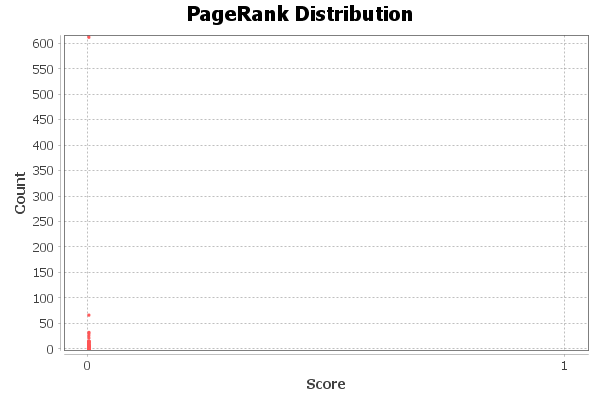

PageRank Report
Parameters:
Epsilon = 0.001
Probability = 0.85
Results:

Algorithm:
Sergey Brin, Lawrence Page, The Anatomy of a Large-Scale Hypertextual Web Search Engine, in Proceedings of the seventh International Conference on the World Wide Web (WWW1998):107-117